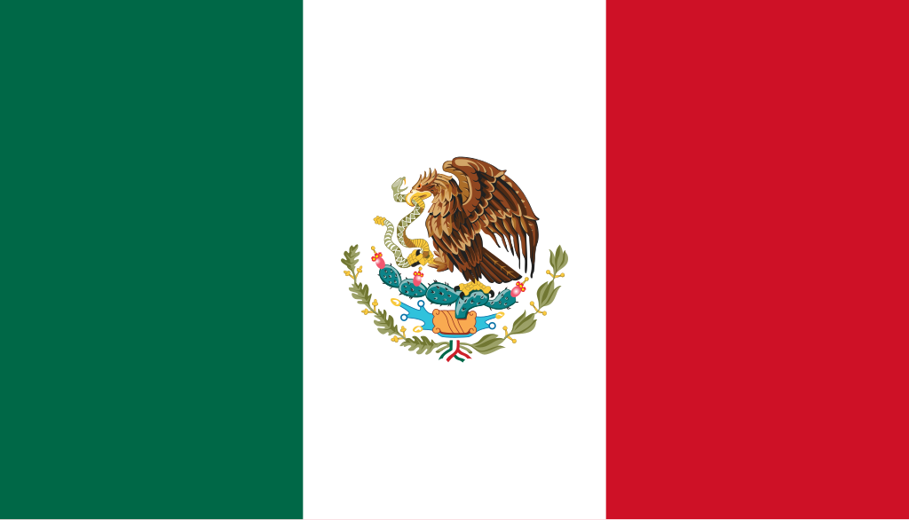

México
 O México, oficialmente Estados Unidos Mexicanos, é um país localizado na América do Norte, fazendo fronteira ao norte com os Estados Unidos, ao sul e oeste com o Oceano Pacífico, ao leste com o Golfo do México e o Caribe, e ao sudeste com Belize e Guatemala. Com cerca de 1,96 milhão de km², é o 13º maior país do mundo em extensão territorial e possui uma população de aproximadamente 130 milhões de habitantes, tornando-se o país de língua espanhola mais populoso do planeta. O México é caracterizado por uma grande diversidade cultural, geográfica e étnica, resultado da fusão das tradições indígenas pré-colombianas com influências espanholas, africanas e de outras culturas migrantes. Sua economia é a segunda maior da América Latina, com setores fortes em manufatura, petróleo, agricultura, turismo e comércio internacional. O país é membro das Nações Unidas, OEA, G20 e da Aliança do Pacífico, exercendo papel importante na política e economia regional.
História
A história do México é marcada pela presença de civilizações indígenas avançadas, como os maias, astecas e olmecas, que desenvolveram complexas sociedades, cidades-estados, sistemas de escrita, astronomia e arquitetura monumental. No século XVI, exploradores espanhóis chegaram à região, liderados por Hernán Cortés, e iniciaram a colonização do território, resultando na queda do Império Asteca e na criação do vice-reinado da Nova Espanha, que durou quase 300 anos. Durante esse período, houve uma intensa mistura cultural entre indígenas, espanhóis e africanos trazidos como escravos, dando origem à diversidade étnica e cultural mexicana contemporânea.
O movimento de independência do México começou em 1810, com a famosa Grito de Dolores, liderado por Miguel Hidalgo, culminando na independência em 1821. No século XIX, o país enfrentou instabilidade política, conflitos territoriais e intervenção estrangeira, incluindo a Guerra Mexicano-Americana (1846–1848) e a ocupação francesa, que resultou no breve reinado de Maximiliano I. O século XX trouxe a Revolução Mexicana (1910–1920), movimento social que transformou profundamente a estrutura política, social e econômica, promovendo reforma agrária, educação pública e maior igualdade social. Desde então, o México consolidou-se como uma república federal moderna, mantendo fortes tradições culturais e identidade nacional.
Cultura
A cultura mexicana é reconhecida mundialmente por sua riqueza, diversidade e cores vibrantes, refletindo a fusão entre heranças indígenas e espanholas, além de influências africanas e contemporâneas. O país é famoso por suas festividades, como o Dia dos Mortos, uma celebração única que mistura rituais pré-hispânicos e católicos, homenageando os antepassados de maneira festiva e simbólica. A gastronomia mexicana também é patrimônio cultural da humanidade, com pratos tradicionais como tacos, tamales, mole, guacamole e pozole, utilizando ingredientes autóctones como milho, feijão, pimenta e abacate, e incorporando técnicas culinárias ancestrais.
As artes são uma expressão central da identidade mexicana, desde os murais de Diego Rivera, David Alfaro Siqueiros e José Clemente Orozco até a literatura de autores como Octavio Paz e Juan Rulfo. A música e dança tradicionais incluem mariachi, son jarocho, danzón e ballet folclórico, sendo celebradas em festivais locais e nacionais. O idioma oficial é o espanhol, mas o México reconhece mais de 60 línguas indígenas, mantendo vivas tradições linguísticas ancestrais. A arquitetura combina pirâmides pré-hispânicas, igrejas coloniais, cidades barrocas e construções modernas, criando paisagens urbanas únicas em cidades como Cidade do México, Guadalajara e Oaxaca.


Clima
O México apresenta uma grande variedade climática devido à sua extensão territorial e relevo diversificado, que inclui planícies, cadeias montanhosas e costas oceânicas. As regiões costeiras têm clima tropical, com altas temperaturas e chuvas intensas, enquanto o norte possui clima árido e semiárido, com verões quentes e invernos frios. O centro do país, incluindo a Cidade do México, apresenta clima temperado, com estações relativamente definidas e menor amplitude térmica. Essa diversidade climática influencia a agricultura, a fauna e a distribuição populacional, tornando o México um país de contrastes naturais e culturais.
Biodiversidade
O México é um dos países mais biodiversos do planeta, abrigando ecossistemas variados, desde desertos e florestas tropicais até manguezais e recifes de corais. O país é lar de espécies endêmicas e emblemáticas, como jaguares, águias, quetzais, cactos gigantes e diversas plantas medicinais. Parques nacionais e reservas, como a Reserva da Biosfera de Sian Ka'an e o Parque Nacional de Palenque, protegem a fauna e flora nativas, promovendo a pesquisa científica, turismo sustentável e conservação ambiental. O país enfrenta desafios como desmatamento, poluição e urbanização, mas mantém políticas e programas de preservação ambiental em colaboração com organizações internacionais.
Esforços de conservação incluem a criação de áreas protegidas, regulamentação da exploração de recursos naturais e projetos de educação ambiental, garantindo que ecossistemas frágeis e espécies ameaçadas continuem existindo para as futuras gerações. A biodiversidade mexicana é um patrimônio natural valioso e elemento central da identidade cultural do país.


Cidades
As cidades mexicanas refletem a diversidade histórica, cultural e geográfica do país, combinando áreas modernas com centros históricos preservados. A Cidade do México é o principal centro político, econômico e cultural, com museus, universidades e patrimônios históricos, incluindo o Zócalo e o Templo Mayor. Guadalajara é reconhecida por sua tradição musical e cultural, enquanto Monterrey se destaca pelo desenvolvimento industrial e econômico. Outras cidades importantes incluem Puebla, Oaxaca, Cancún e Mérida, cada uma com características únicas, arquitetura distinta e riqueza cultural local.
As cidades mexicanas desempenham papel central na economia, educação e turismo, concentrando população, infraestrutura e serviços essenciais. A urbanização é combinada com a preservação de tradições e patrimônio cultural, refletindo a identidade nacional e a convivência entre modernidade e história. O planejamento urbano busca equilibrar crescimento econômico, qualidade de vida e conservação ambiental, tornando as cidades mexicanas referências em diversidade, cultura e inovação.